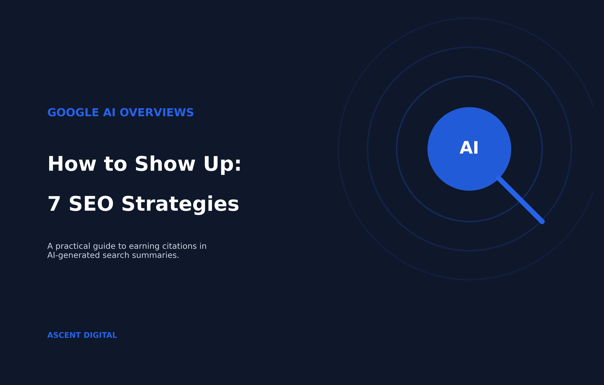
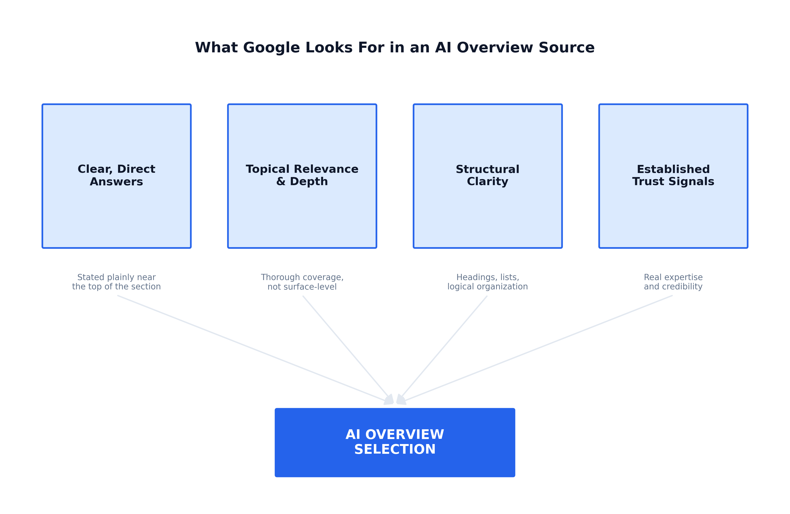
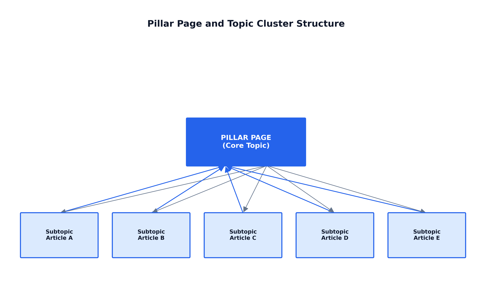
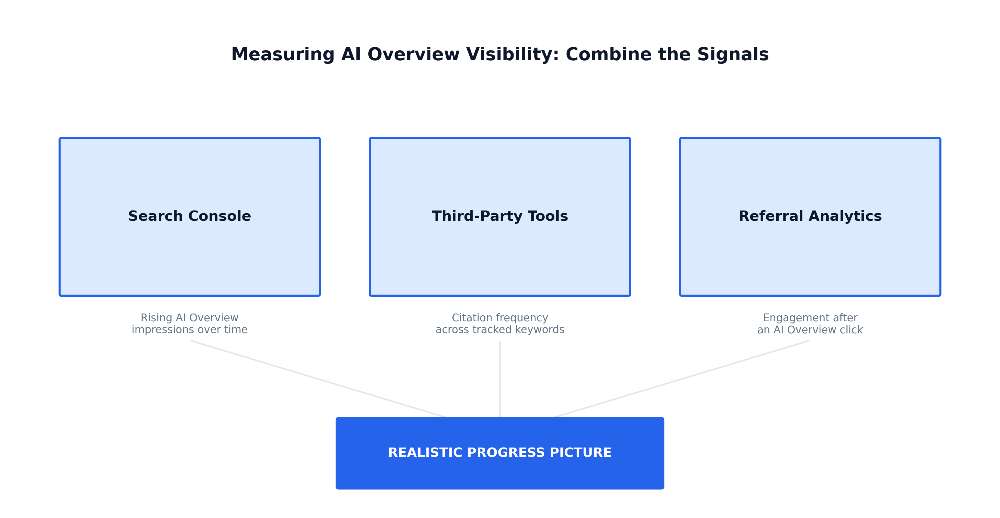

How to Show Up in Google AI Overviews: 7 SEO Strategies
When you search for something on Google today, there's a good chance you don't even need to click a link anymore. An AI-generated summary appears right at the top of the results page, pulling together an answer from multiple sources before you've scrolled past the first inch of screen. This is Google's AI Overview feature, and it's changing how people find information and how websites earn visibility.
The good news is that showing up in AI Overviews builds on the same SEO fundamentals you already know: quality content, topical authority, technical soundness, and credibility, applied with a sharper focus on how AI systems parse and select information. Below are seven practical strategies to help your content become the kind of resource Google's AI is more likely to draw from.

What Are Google AI Overviews and How Do They Select Content?
Google AI Overviews are the AI-generated summaries that appear at the top of certain search results, above the traditional blue links. Instead of asking you to click through to five different websites to piece together an answer, Google generates a synthesized response directly on the results page, often pulling information from multiple sources and citing a handful of them with links.
Google's systems first identify a set of relevant, high-quality web pages using the same broad ranking signals it relies on for regular search results: relevance, content quality, authority. A generative model then reads across those sources and produces a written summary. Google isn't inventing an answer from nothing; it's synthesizing one from existing content that already ranks well. If your page isn't visible enough to be part of that initial pool of candidate sources, it has little chance of being used in the summary above it.

1. Structure Your Content for Direct, Extractable Answers
Google's AI Overviews don't read your page the way a human visitor does. They scan for chunks of content that answer a specific question clearly enough to lift out and reuse. If your key point is buried in the fourth paragraph or spread across three sentences before finally landing on the answer, a competitor who just said the thing directly gets pulled in instead.
Lead With the Answer, Then Explain
When you're addressing a specific question, in a heading, an FAQ, or a section of a longer guide, the sentence or two immediately following it should contain the actual answer, not background or a rephrasing of the question. Give the direct answer first, then explain the reasoning, exceptions, or context underneath it.
Write in Self-Contained Chunks
AI Overviews tend to pull small, complete units of meaning (a sentence, a short paragraph, a list item) rather than stitching fragments together. Read a single paragraph in isolation: does it stand on its own, or does it lean on "as mentioned above" to make sense? Content written in tightly scoped, self-contained units is easier for an AI system to lift cleanly, and easier for a human to skim too.
Use Formatting That Signals Structure
Headings, numbered lists, bullet points, and short tables organize information for readers and give AI systems clear signals about where one idea ends and another begins. A few habits worth adopting:
- Use question-based subheadings where they reflect how people actually search.
- Break sequential information into numbered steps rather than paragraph form.
- Use bullet points for parallel items instead of listing them inline in a sentence.
- Keep paragraphs short, generally three to four sentences, one idea each.
2. Build Topical Authority With Comprehensive, Interlinked Content
A single well-optimized page can occasionally earn a spot in an AI Overview, but it rarely holds that spot on its own. The feature tends to favor sites that demonstrate depth on a subject, not a single strong article. That broader understanding of a subject is topical authority, and building it deliberately is one of the more overlooked levers in AI Overview visibility.
Why Depth Beats a Single Great Page
A site with one detailed article on a topic but nothing else around it looks isolated to these systems. A site with dozens of interconnected articles covering the same subject area from different angles gives Google far more confidence that it's dealing with a genuine authority, not a one-off page.
How to Build a Topic Cluster
Building topical authority means mapping out a subject area deliberately and filling in the gaps with useful, non-redundant content:
- Identify a core topic broad enough to support multiple subtopics.
- List the subtopics and related questions people actually ask; each becomes its own page.
- Create a central pillar page that overviews the core topic and briefly touches each subtopic.
- Interlink deliberately: the pillar links out to each subtopic, and each subtopic links back to the pillar and to sibling articles.

Why Internal Linking Matters More Than It Looks
A page linked to from several credible pages on your own site looks embedded in a body of expertise, versus an orphaned page with no internal links pointing to it. If you haven't read our breakdown of how keyword research turns into a content strategy, it's a useful companion to this section. Clustering keywords is usually the first step toward mapping a topic cluster like this one.
3. Optimize for Conversational and Question-Based Queries
Google AI Overviews draw heavily on content that answers questions the way a person would actually ask them, not the clipped keyword fragments people typed a decade ago. Behind the feature are systems trying to match a full, natural question to a piece of content that answers it clearly and completely.
Identify the Real Questions Your Audience Is Asking
- Check the "People also ask" boxes and related searches for your target topics.
- Look at the questions customers or clients ask you directly, in emails or calls.
- Use your site search data, if you have it, to see what visitors are typing.
- Pay attention to forums and community discussions in your niche.
Structure Content Around Question-and-Answer Patterns
- Use questions as subheadings, phrased the way people actually search.
- Answer the question early in the section, then explain with context and nuance.
- Write in a natural, spoken register; you don't need to sound robotic to be authoritative.
4. Strengthen E-E-A-T Signals to Earn AI Trust
Before a large language model decides whether your content is trustworthy enough to summarize, it has to answer a more basic question: does this come from someone who actually knows what they're talking about? That's E-E-A-T (Experience, Expertise, Authoritativeness, and Trustworthiness), and it matters just as much, arguably more, when an AI system is deciding which sources are safe to pull into a generated answer.
Show Real Experience, Not Just Expertise
Content that reads as though it was assembled entirely from other people's work is easy to spot, for AI systems and human readers alike. Concrete details, original examples, and practical nuance that only comes from firsthand involvement make the difference.
Make Expertise and Authorship Visible
A surprising number of websites still publish content without a named author or any indication of who wrote it. Adding a clear author byline, a short bio, and a link to more of that author's work signals that a real, identifiable person stands behind the content.
Strengthen Trustworthiness at the Page and Site Level
Trust signals operate at both levels, and both matter to how AI systems evaluate a source:
- Citing credible sources for claims, statistics, or specific facts.
- Keeping information current, and clearly showing when a page was last updated.
- A clear, accurate "About" page, accessible contact information, and secure browsing (HTTPS).
5. Use Structured Data and Schema Markup to Aid Understanding
Structured data won't guarantee that Google's AI Overviews pull your content into a summary, but it removes a layer of ambiguity that can work against you. Schema markup follows a shared vocabulary, schema.org, that explicitly labels what a piece of content means (this is a price, this is an author, this is a review score) instead of leaving Google's systems to infer meaning from context.
A few schema types are worth prioritizing for AI Overview visibility specifically:
- Article/BlogPosting: identifies authorship, publish and update dates, and headline structure.
- FAQPage: marks up question-and-answer content directly.
- HowTo: structures step-by-step processes.
- Organization/Person: clarifies who's publishing and who wrote it.
- BreadcrumbList: shows how a page fits into your site's broader structure.
Test markup with Google's Rich Results Test before publishing, and monitor Search Console's enhancement reports afterward. Schema can break silently when a page template changes.
6. Earn Citations and Mentions Across the Web
Google's AI Overviews cross-reference what the rest of the internet says about you, not just your own page. If you're invisible everywhere except your own domain, you're asking Google to take your authority on faith alone. This is part of why guest posting and off-page SEO and backlinks remain relevant in the AI search era. The goal has shifted from chasing links purely for ranking power to building a footprint of mentions and citations that signal real authority in your space.
That footprint comes from a mix of sources: digital PR and press coverage, guest contributions and expert roundups, being cited by other sites as a source, directory and industry-association listings, and active participation in relevant communities. Start by identifying what your business genuinely knows better than most, and look for realistic, relevant places to share it.
7. Improve Technical SEO Foundations for Crawlability
No content will ever rank in Google's traditional results or get pulled into an AI Overview if Google's systems can't crawl it, render it, and index it cleanly first. AI Overviews draw from the same index that powers standard search results. There's no separate crawler for AI-featured content. The technical SEO basics that have mattered for years still apply, and arguably matter more, because AI systems need to process a page quickly and unambiguously to pull accurate information from it.
Check your robots.txt file and XML sitemap, review the "Pages" report in Search Console for wrongly excluded URLs, address page speed issues (usually unoptimized images or slow server response), confirm mobile-friendliness, and use canonical tags for duplicate content. If you haven't run one recently, a full SEO audit is the fastest way to surface these gaps in one pass rather than checking each item individually.
Track and Measure Your AI Overview Visibility
AI Overviews don't come with a dashboard of their own, and Google doesn't notify you when your content gets cited in one, but tracking progress isn't impossible. Google has been rolling out reporting in Search Console that separates AI Overview impressions and clicks from standard search results. Filter by "search appearance" and look specifically for AI Overview data. A low click-through rate alongside rising impressions isn't a failure signal; it often just reflects how AI Overviews are designed to work, answering the query directly on the results page.
Pair that with third-party SEO tools that track AI Overview presence, manual searches of your own target queries in a logged-out browser session, and a look at what happens after a citation does produce a click. Look at the combination of signals together over weeks, not a single clean number or a single day's snapshot.

Conclusion
Getting your content into Google AI Overviews isn't about gaming a single ranking factor; it's about making your site easier for both AI systems and human readers to understand, trust, and cite. Clear, well-structured answers give AI systems something extractable. Topical authority and internal linking show your coverage runs deep.
Conversational phrasing matches how people actually ask questions. E-E-A-T signals, structured data, and technical SEO fundamentals reinforce credibility. And because AI Overviews draw on sources beyond your own site, being mentioned and cited elsewhere matters just as much as what you publish yourself.
None of this guarantees a spot in any given AI Overview. Google's selection process depends on many factors outside any site owner's control. What you can control is the quality, clarity, and trustworthiness of what you publish. Pick one piece of high-value content, restructure it around a clear, direct answer near the top, add relevant schema markup, and use that as your template for the rest of the site.
Not sure where to start, or don't have the time to work through this yourself? Get in touch and we'll take a look at what's actually holding your content back.
Frequently Asked Questions
Why would a page appear correctly in search results but still get skipped by an AI Overview?
The answer, even if present, may be buried in dense paragraphs or not stated plainly near the top of the relevant section, making it hard for the AI system to extract cleanly. Competitors who state their answer more directly are more likely to get pulled into the summary instead, even with similar overall page quality.
Does a low click-through rate alongside rising AI Overview impressions mean my content is underperforming?
Not necessarily. AI Overview appearances often generate strong impressions with comparatively low click-through rates simply because the AI Overview answers the query directly on the results page. Watch for rising impressions over time as the more meaningful signal.
How much content do I need to publish before my site has real topical authority?
There's no exact quota. Topical authority is built through a pillar page and interlinked subtopic articles that genuinely close coverage gaps: depth and non-redundant coverage matter more than sheer volume.
Does adding schema markup increase my odds of being cited in an AI Overview?
Not on its own. Schema removes ambiguity about what your content means, which helps, but it works best as a supplement to already clear, well-organized content, not a substitute for it.
Why do mentions on other websites matter if my own page already answers the question well?
Because AI Overviews cross-reference what other sites say about you, not just your own page. If a competitor has credible external mentions and you have none, the model has more material to draw from and more reason to trust their content over yours, even with equally strong on-page content.